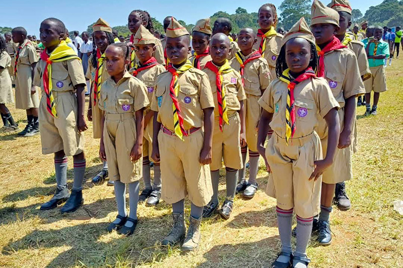
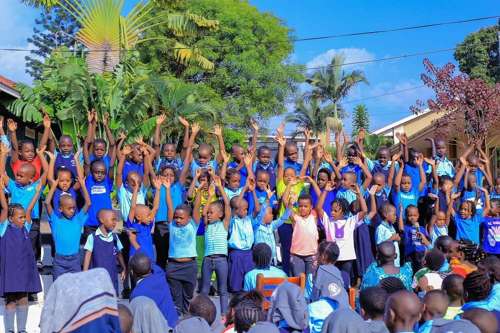
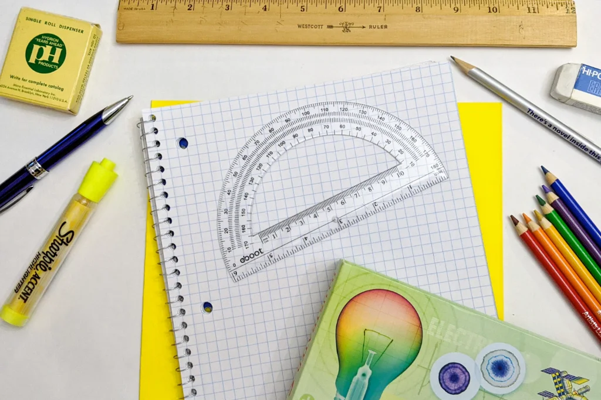
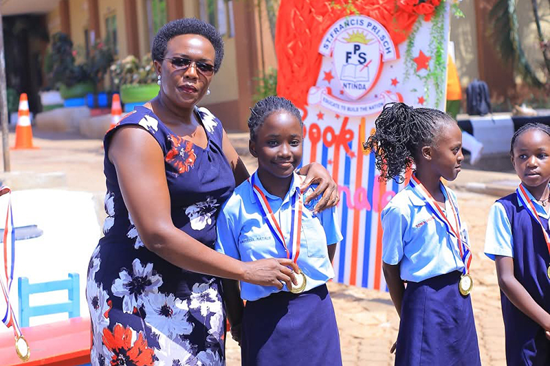

Academics
St. Francis Ntinda Celebrates Outstanding UNEB PLE Division One Results

We believe that education is a partnership between home, school, and community. At St. Francis Day & Boarding Primary School – Ntinda, we work closely with parents to nurture disciplined, self-reliant, and academically outstanding learners from Nursery to Primary Seven.
Extracurricular Activities support
Community Involvement
Support for diverse learners
State-of-Art Facilities
We also offer a range of extracurricular activities like sports, clubs and arts programs that allow our students to develop new skills, build confidence and make lasting friendships.

Mr. Francis Mukasa
Headteacher, St. Francis P/S – Ntinda


To provide learners with knowledge and skills for self-reliance thus enabling them face challenges of a modern society.
To produce an all-round learner.
Educate to build the nation
St. Francis Primary School Ntinda's featured programs offer your child a vibrant mix of academic rigor, talent exploration, moral education, and supportive boarding care, designed to inspire success from Nursery through P7.
Structured lessons in English, Mathematics, Literacy, and Environment with a strong focus on reading fluency, handwriting, arithmetic, and small-group remedial attention.
Learn MoreExtracurricular activities including football, netball, swimming, music, dance, and drama tailored to young learners to build teamwork, confidence, and physical fitness.
Learn MoreIntegrating core values of honesty, discipline, and respect into daily school life alongside Religious Education and pastoral guidance for all learners.
Learn MoreOpportunities for pupils to serve as prefects, house captains, and club leaders, with regular inter-house debates, scouting, and public speaking training.
Learn MoreIntensive mastery of English, Mathematics, Integrated Science, and Social Studies with continuous assessments, holiday revision, and exam technique mentorship.
Learn More
A joyful, play-based early childhood curriculum emphasizing phonics, storytelling, counting, creative arts, and social skills in a safe, caring environment.
Learn MoreFollowing in the footsteps of St. Francis, embracing compassion and wisdom.

Debate, Writers Club, Wildlife & Environment Club, Scouts & Girl Guides, and Chess Club to build practical life skills.
Inter-house athletics, football, netball, swimming, and physical education coached on our spacious Ntinda sports grounds.
Traditional Ugandan cultural dances, school choir, instrumental training, and annual creative arts festivals.
Safe, hygienic dormitories with experienced matrons, balanced meals, supervised prep, and weekend recreational care.
What the parents and Alumni are saying about us
Enrolling our two children at St. Francis Primary School Ntinda was the best decision for our family. Their reading confidence, discipline, and love for learning have blossomed remarkably.

The dedicated P.7 teachers and boarding matrons gave my son the academic focus and parental care he needed to score Aggregate 4 in UNEB PLE and join his dream secondary school.

St. Francis gave me a strong foundation in mathematics, public speaking, and personal discipline that carried me through secondary school and university.

The nursery teachers are so patient and warm. My daughter looks forward to school every single morning and already reads simple storybooks on her own.

Beyond high PLE grades, what sets St. Francis Ntinda apart is how they nurture all-round learners—my children excel in choir, swimming, and religious values alongside their classwork.

Looking back at my boarding years at St. Francis Ntinda, the motto "Educate to build the nation" truly shaped who I am today as a community leader.

For over 36 years, St. Francis Day and Boarding Primary School – Ntinda has consistently ranked among Kampala's trusted primary schools, combining strong UNEB PLE academic results with character formation and talent development.
Consistent Division One performance in the Uganda National Examinations Board (UNEB) Primary Leaving Examinations.
Well-stocked library, computer laboratory, spacious classrooms, sickbay, and secure boarding dormitories in Ntinda.
Thousands of former pupils excelling in Uganda's top secondary schools, universities, and professions worldwide.
Stay updated with the latest academic achievements, term announcements, and activities at St. Francis Primary School Ntinda.
Mark your calendar for upcoming term activities, parents visitation days, sports galas, and academic exhibitions.
Pupils from P.1 to P.7 showcase hands-on science experiments, environmental conservation models, and creative ICT projects.
An opportunity for parents and guardians to review continuous assessment progress with class teachers and visit boarding pupils.
Cheer on our school houses in track relays, football, netball, sack races, and tug-of-war at our annual family sports day.
Celebrating our Top Class graduates transitioning to Primary One alongside prize-giving for top academic and co-curricular performers.